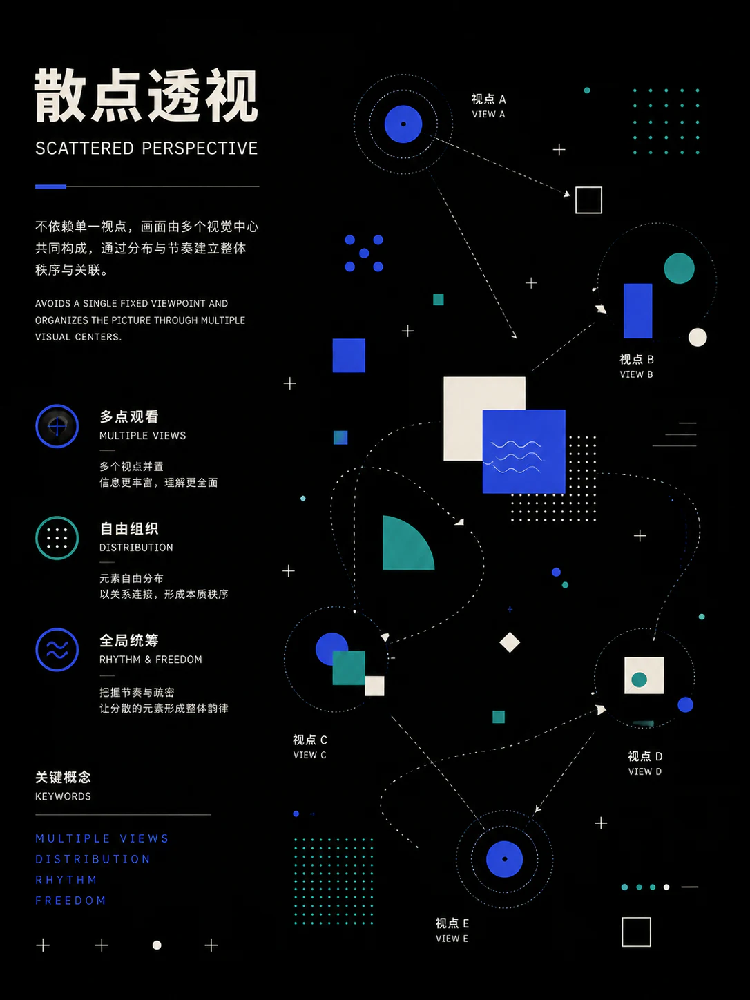

顾闳中《韩熙载夜宴图》
北京故宫博物院藏，纵 28.7 cm × 横 335.5 cm。全卷以屏风与床榻自然分隔「听乐、观舞、暂歇、清吹、散宴」五场独立时空，每一幕都是自洽的视点中心。
SCATTERED PERSPECTIVE
不依赖单一视点，画面由多个视觉中心共同构成，通过分布与节奏建立整体秩序与关联。
AVOIDS A SINGLE FIXED VIEWPOINT AND ORGANIZES THE PICTURE THROUGH MULTIPLE VISUAL CENTERS.
五处视点被单一灭点拉扯压扁，信息挤作一团
拖动画布中任意视点环排布疏密 · 选中后按键盘方向键微调（Shift 加速）· 解除单灭点并织出连脉即可成局
THREE PRINCIPLES FROM THE POSTER
原海报用三条短句拆开了散点透视的骨架。先按原话逐条读透，再把容易被望文生义的那一句挑出来校准。
ONE FIXED WINDOW VS. MULTIPLE EYES
1435 年，意大利建筑师兼学者阿尔贝蒂（Leon Battista Alberti）在《论绘画》（De pictura）里把画框比作一扇敞开的窗——观者被固定在一只静止眼睛之后，所有纵深平行线收向唯一灭点。散点透视做的恰恰是相反的选择：牺牲单眼瞬间的光学缩放，换回多处景物各自完整的正面信息。
FROM SHEN KUO TO SHIFTING VIEWPOINTS
中国古代画论里原本并没有「散点透视」这个词——古人把这套看世界的方式叫作「以大观小」，到了 20 世纪中西美术比较热潮中才定型为现代术语。
「大都山水之法，盖以大观小，如人观假山耳。若同真山之法，以下望上，只合见一重山，岂可重重悉见，兼不应见其溪谷间事……其间折高、折远，自有妙理，岂在掀屋角也！」
北京故宫博物院藏，纵 28.7 cm × 横 335.5 cm。全卷以屏风与床榻自然分隔「听乐、观舞、暂歇、清吹、散宴」五场独立时空，每一幕都是自洽的视点中心。
沈括点破画家不必如照相机般锁死脚下位置；张择端《清明上河图》（纵 24.8 cm × 横 528.7 cm）以汴河与长街串联郊林、虹桥、城门多处重心。同时期郭熙提出「三远」法，具体仰望、穿透与横展可分别见 315 高远法、316 深远法、317 平远法 与 318 三远综合构图。
德国学者奥托·菲舍尔（Otto Fischer）《中国风景画》（1921 年初版，1943 年扩订）已辨析中国画打破单一定点视框的空间观；中国美学家宗白华于 1935 年演讲、1936 年发表《中西画法所表现的空间意识》，将「以大观小」与西方定点透视对照阐发，使「散点透视」广为流传。
1988 年，菲利普·哈斯执导、大卫·霍克尼主演的纪录片《与中国皇帝同行大运河》展开清代王翚主持绘于 1691–1698 年的《康熙南巡图》，对照单点透视，揭示了多视点在当代叙事与信息设计里的生命力。若想深入观者沿动线漫步的时间编排，见 320 游观式构图。
FOUR PRACTICAL RULES OF ORDER
新手做散点构图最怕「散了以后收不回来」。下方四个病灶开关对应最常见的四种失控，每次点开一个，观察旁边微缩星图如何一步步失去秩序（文中比例均为设计经验参考带）。
WHEN IT WORKS & WHEN TO SKIP IT
QUICK CHECK · SPOT THE SOUND SCATTER
四张方案使用完全相同的五个城市节点（象牙/宝蓝中枢广场与四处分景）、相同的配色与画幅，只改变了节点的位置排布、体量比例与连接语法。哪一张真正做到了「多点清晰、疏密有致、整体成脉」？
ORIGINAL POSTER & KEYWORDS
